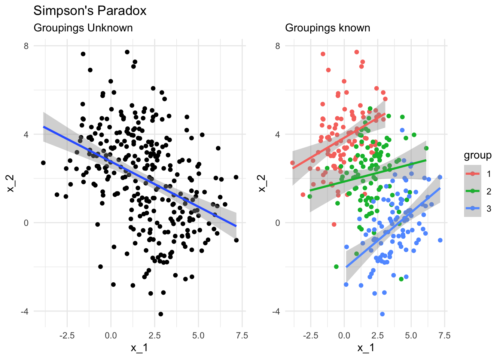
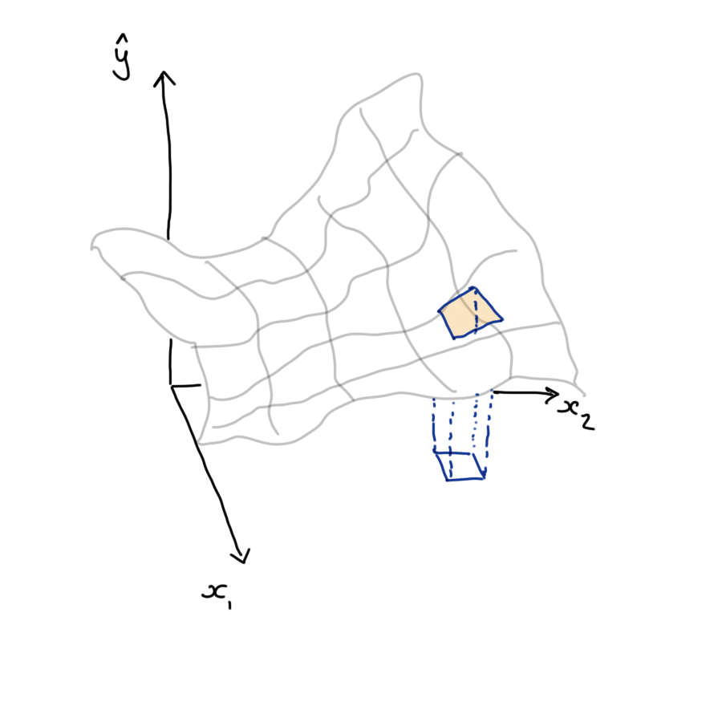

11 Explainability
Note
Effective Data Science is still a work-in-progress. This chapter is largely complete and just needs final proof reading.
If you would like to contribute to the development of EDS, you may do so at https://github.com/zakvarty/data_science_notes.
11.1 What are we explaining and to whom?
There are many reasons you might need to explain the behaviour of your model before it can be put into production. As an example, we can consider a credit scoring system that determines whether or not customers should be given a line of credit.
- Regulatory or legal requirements to describe how your model works (e.g. ban on “black-box” modelling).
- Understanding how your model works to improve it.
- Explaining to individual load decisions to customers.
In each of these cases, what exactly do we mean by an explanation? It’s likely not the same thing in each example.
Data scientists we might be interested to know exactly what types of mapping between covariates and responses can be represented by the neural network architecture underlying the credit scoring system.
Stakeholders within the company or regulators are likely indifferent to this and are more concerned about understanding the general behaviour of the model across large numbers of loan applications.
Finally, individual customers might have some investment in the overall behaviour of the scoring model but would also like to know what actions they can take to increase their chance of securing a loan.
Between each of these examples, the level of technical detail differs but more importantly the fundamental nature of the explanations are different.
11.2 Explaining a Decision Tree
With some models giving an explanation is relatively straightforward. Decision trees are perhaps the easiest model to explain because they mimic human decision making and can be represented like flow-charts that make sequential, linear partitions of the predictor space.
These models use the same sort of logic that is used for medical triage when you call an ambulance, to determine the urgency of the call. The binary decisions used in this type of triage are optimised to identify critical calls as soon as possible, but this is just one form of loss function we could use. We might instead pick these partitions to get the most accurate overall classification of calls to urgency categories. This might not be an appropriate loss function for ambulance calls but might be when deciding which loan applicants to grant credit to.
The issue is that these decision trees are limited in the relationships they can represent (linear relationships approximated by step function) and are sensitive to small changes in the training data. To overcome these deficiencies we can use a bootstrap aggregation or a random forest model to make predictions based on a collection of these trees. This leads to models that are more stable and flexible but also removes any chance of a simple and human-friendly explanation.
11.3 Explaining Regression Models
Another model that is relatively straightforward to interpret is a linear regression. We can interpret this model using the estimated regression coefficients, which describe how the predicted outcome changes with a unit change in each covariate while the values of all other covariates are held constant.
This is a global and a conditional explanation.
It is global because the effect of increasing a covariate by one unit is the same no matter what the starting value of that covariate. The explanation is the same in all parts of the covariate space.
The explanation is conditional because it assumes that all other values are held constant. This can lead to some odd behaviour in our explanations, they are dependent on what other terms are included (or left out of) our model.
This can be contrasted against non-linear regression, where covariate effects are still interpreted conditional on the value of other covariates but the size or direction of that effect might vary depending on the value of the covariate.

Here we have an example where a unit increase in the covariate is associated with a large change in the model response at low values of the covariate, but a much smaller change at large values of the covariate.
11.4 Example: Cherrywood regression
As an example of this we can look at the height, girth and volume of some cherry trees.
If we are wanting to use a lathe to produce pretty, cherry wood ornaments we might be interested in understanding how the girth of the trees varies with their height and total volume. Using a linear model, we see that both have a positive linear association with girth.
lm(Girth ~ 1 + Height, data = trees)
#>
#> Call:
#> lm(formula = Girth ~ 1 + Height, data = trees)
#>
#> Coefficients:
#> (Intercept) Height
#> -6.1884 0.2557lm(Girth ~ 1 + Volume, data = trees)
#>
#> Call:
#> lm(formula = Girth ~ 1 + Volume, data = trees)
#>
#> Coefficients:
#> (Intercept) Volume
#> 7.6779 0.1846However, when we include both terms in our model, our interpretation changes dramatically.
lm(Girth ~ 1 + Height + Volume, data = trees)
#>
#> Call:
#> lm(formula = Girth ~ 1 + Height + Volume, data = trees)
#>
#> Coefficients:
#> (Intercept) Height Volume
#> 10.81637 -0.04548 0.19518Height is no longer positively associated with girth. This is because the size, direction and significance of our estimated effects is conditional on what other terms are included in the model. For a fixed volume of wood, a taller tree necessarily has to have a smaller girth.
Techniques such as SHAP try to quantify the importance of a predictor by averaging over all combinations of predictors that might be included within the model. You can read more about such techniques in Interpretable Machine Learning by Christoph Molnar.
11.5 Simpson’s Paradox
This effect is related to Simpson’s Paradox, where a trend appears in several groups of data but disappears or reverses when the groups are combined.
This regularly arises in fields like epidemiology, where population level trends are assumed to apply at the level of individuals or small groups, where this is known as the ecological fallacy.
Actually, Simpson’s parodox is a terrible name, because it isn’t actually a paradox at all. It’s not surprising that we have two different answers to two different questions, the supposed contradiction only arises when we fail to distinguish between those questions.

What I hope to have highlighted here is that for some of the simplest models we might use as data scientists, explanations are very much possible but must be made with care and attention to detail - correctly interpreting these models in context can be far from straightforward.
11.6 What hope do we have?
At this stage, you might be asking yourself what hope we have of explaining more complex models like random forests or neural networks, given how difficult it is to explain even the simple models we might take as our benchmark. You’d be right to worry about this and it is important to remain humble in what we can and cannot know about these complex systems that we are building.
All hope isn’t lost though - we still have a few tricks up our sleeve!
11.6.1 Permutation Testing
Suppose we’re asked by our product manager to determine which predictors or covariates are usually the most import in our model when determining credit scores and loan outcomes.
One way to do this would be to remove each covariate from the model and investigate how that changes the predictions made by our model. However, we’ve seen already that removing a predictor can substantively change some models.
So instead, we could answer this question by using permutation methods.
If we take the observed values of a covariate, say income, and randomly allocate these among all our training examples then this will destroy any association between income and loan outcome. This allows us to remove the information provided by income but without altering the overall structure of our model. We can then refit our model to this modified data set and investigate how rearranging the covariate alters our predictions. If there is a large performance drop, then the covariate is playing an important role within our model.
There are many variations on this sort of permutation test. They can be simple but powerful tools for understanding the behaviour of all sorts of model.
11.6.2 Meta-modelling
Meta-models are, as the name suggests, models of models and these can be effective methods of providing localised explanations for complex models.
The idea here is to look at a small region of the covariate space that is covered by a complex and highly flexible model, such as a neural network. We can’t easily give a global explanation for this complex model’s behaviour - it is just too complicated.
However, we can interrogate the model’s behaviour within a small region and construct a simplified version of the model (a meta-model) that lets us explain the model within that small region. Often this meta-model is chosen as a linear model.

This is partly for convenience and familiarity but also has a theoretical backing: if our complex model is sufficiently smooth then we can appeal to Taylor’s Theorem to say that in a small enough region the mapping can be well approximated by a linear function.
This sort of local model explanation is particularly useful where we want to explain individual predictions or decisions made by our model: for example why a single loan applicant was not granted a loan. By inspecting the coefficients of this local surrogate model we can identify which covariates were the most influential in the decision and suggest how the applicant could increase their chance of success by summarising those covariates that were both influential and are within the ability of the applicant to change. This is exactly the approach taken by the LIME methodology developed by Ribiero et al.
11.6.3 Aggregating Meta-models
Using local or conditional explanations of our model’s behaviour can be useful in some circumstances but they don’t give a broader understanding of what is going on overall. What if we want to know how a covariate influences all outcomes not a particular one? What if we care about the covariate’s expected effect over all loan applicants, or the distribution of effects over all applicants?
This is where local and conditional explanations are particularly nice. By making these explanations at many points we can aggregate these explanations to understand the global and marginal behaviour of our models.
To aggregate our conditional effects into a marginal effect, or a local effect into a global effect we must integrate these over the joint distribution of all covariates. If this sounds a bit scary to you, then you are right. Integration is hard enough at the best of times without adding in the fact that we don’t know the joint distribution of the covariates we are using as predictors.
Don’t worry though, we can take the easy way out and do both of these things approximately. We can approximate the joint distribution of the covariates by the empirical distribution that we observe in our sample, and then our nasty integrals simplify to averages over the measurement units in our data (the loan applicants in our case).
If we construct a local, conditional model for each loan applicant in our data set, we can approximate the marginal effect of each covariate by averaging the conditional effects we obtain for each loan applicant.

This gives us a global understanding of how each covariate influences the response of our model. It does this over all possible values of the other covariates and appropriately weights these according to their frequency within the sample (and also within the population, if our sample is representative).
11.7 Wrapping Up
We’ve seen that as our models become more flexible they also become more difficult to explain, whether that is to ourselves, and subject expert or a user of our model.
That’s not to say that simple models are always easy to explain or interpret, simple models can be deceptively tricky to communicate accurately.
Finally, we looked at a couple of techniques for explaining more complex models.
We can use permutation tests measure feature importance in our models: shuffling the predictor values breaks any relationship to our response, and we can measure how much this degrades our model performance. A big dip implies that feature was doing a lot of explaining.
We can also look at the local behaviour of models by making surrogate or meta models, that are interpretable, and aggregate these to understand the model globally.
Effective explanations are essential if you want your model to be used in production and to feed into real decisions decision making. This requires some level of skill with rhetoric to tailor your explanation so that it is clear to the person who requested it. But this isn’t a soft skill, it also requires a surprising amount of computational and mathematical skill to extract such explanations from complex modern models.